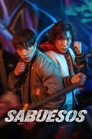

Si m'heu de recomanar una sèrie, que sigui d'acció. La veritat és que el rotllo romàntic m'avorreix una mica, prefereixo les històries que tinguen ritme i que et mantinguin en tensió tota l'estona. M'he tornat molt fan de les sèries coreanes (K-Dramas d'acció), perquè crec que a nivell de producció i de repartir llenya no tenen rival ara mateix.
Per exemple, Sabuesos em va encantar per tot el tema de la boxa i com es fiquen en embolics contra la màfia; les baralles són brutals. Una altra que em va deixar flipant va ser Sweet Home; el rotllo dels monstres i com sobreviuen dins l'edifici és súper fosc i m'encanta. I si parlem de venjança, My Name és de les millors que he vist; la protagonista és una canya i l'evolució que té és increïble.
M'agrada molt com els coreans fan aquest tipus de sèries perquè no se centren només en la baralla, sinó que la història t'enganxa des del minut u. Si no les heu vist, ja esteu trigant, perquè valen molt la pena!